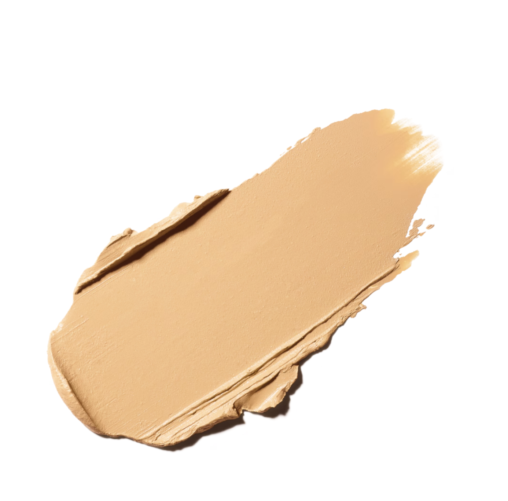
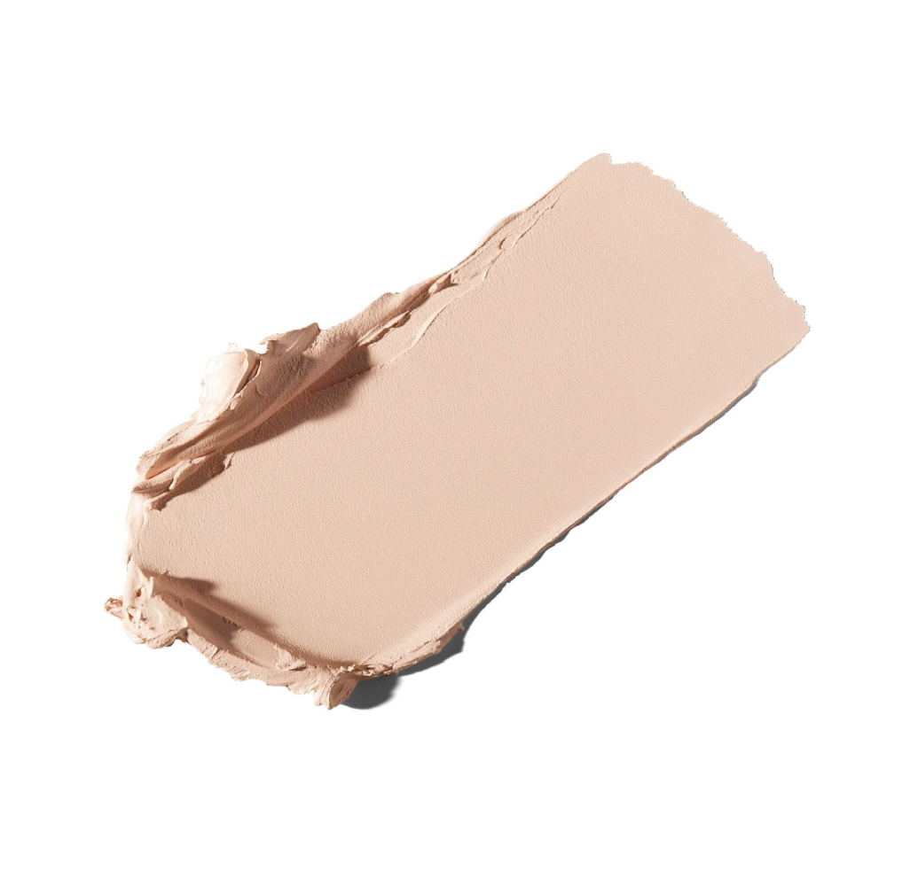

01
Soft Ochre

Creme matte
Bege amareloAplicação
Dedo anelar ou pincel sintético pequeno, em camada fina por toda a pálpebra móvel.
Duas bases em creme para preparar a pálpebra, criar uma tela uniforme e prolongar a maquiagem dos olhos.


Use uma camada fina e bem espalhada. As duas fórmulas funcionam como base de cor, ajudam na aderência das sombras e deixam o acabamento mais uniforme.
Deposite pequenas quantidades no centro da pálpebra e espalhe as bordas antes que a fórmula assente. A aplicação pode ser feita com o dedo anelar ou com um pincel sintético pequeno.

Aplicação
Dedo anelar ou pincel sintético pequeno, em camada fina por toda a pálpebra móvel.

Aplicação
Dedo anelar ou pincel sintético pequeno, pressionando a cor no centro e esfumando as bordas.